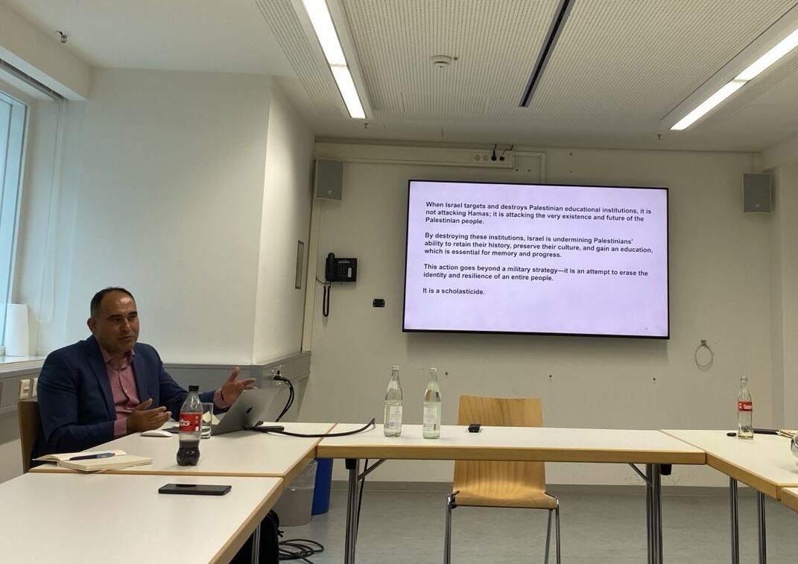
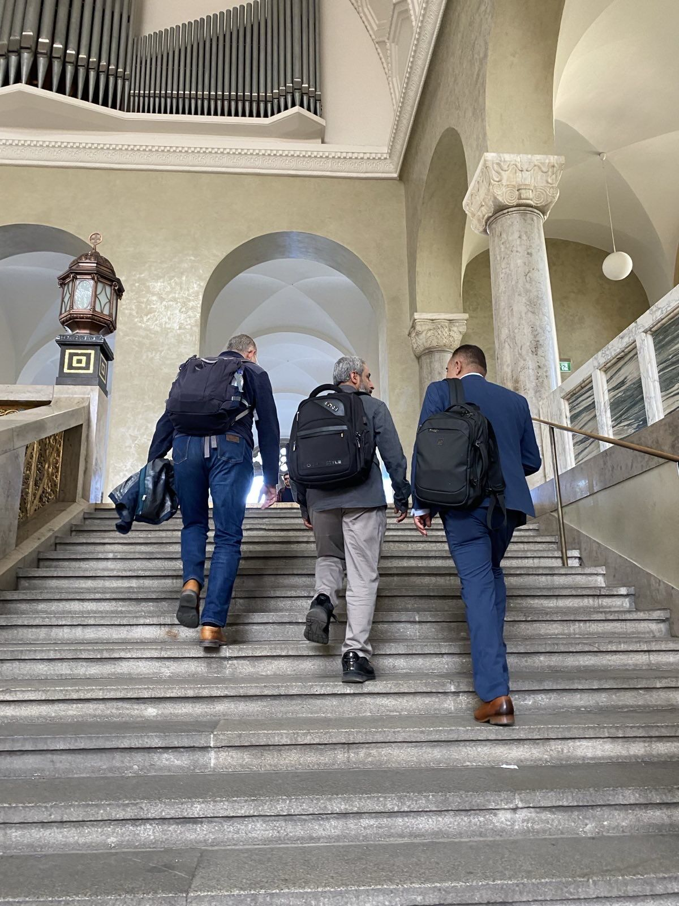

Invited Talks
Dr. Wesam Amer Delivers Lectures at Ludwig Maximilian University of Munich on Palestinian Higher Education and Digital Warfare
Dr. Wesam Amer delivered two invited lectures at Ludwig Maximilian University of Munich, examining the impact of war on Palestinian higher education and the evolving role of digital communication in conflict. His presentations brought together perspectives on scholasticide, media strategy, and the long-term consequences of war for knowledge production and academic life.
Dr. Wesam Amer recently participated in a series of academic talks hosted by the Institute of Communication and Media Research and Near and Middle Eastern Studies at Ludwig Maximilian University of Munich (LMU), contributing to scholarly discussions on war, communication, education, and the future of Palestinian academia.
During the visit, Dr. Amer delivered two research presentations addressing distinct but interconnected dimensions of the ongoing conflict in Gaza. The first lecture, “The Impact of the Israeli War on Palestinian Academia: An Ongoing Nakba for Palestinian Generations,” examined the concept of scholasticide, exploring the systematic deterioration of educational and academic institutions. The presentation analyzed challenges facing Palestinian higher education, including restrictions on academic mobility, financial pressures on universities, and the wider consequences of attacks on educational infrastructure.
The second lecture, “Communication in Times of War: Hamas Digital Communication Strategies amid the Gaza War 2023–2025,” focused on the role of digital media in contemporary conflict. Dr. Amer examined how communication strategies operate within asymmetric warfare environments and explored the ways narratives are constructed, contested, disseminated, and challenged through digital platforms.
Across both presentations, Dr. Amer emphasized the relationship between communication, knowledge production, and societal resilience during periods of conflict. His talks addressed how educational institutions and media systems become central arenas within broader political and social struggles, influencing public perception, historical memory, and future recovery efforts.
The lectures attracted interest from researchers and students working across media studies, political communication, Middle Eastern studies, and conflict research. By bringing together perspectives from communication scholarship and higher education studies, the event contributed to ongoing international academic discussions concerning conflict, displacement, information environments, and the protection of knowledge systems during war.


